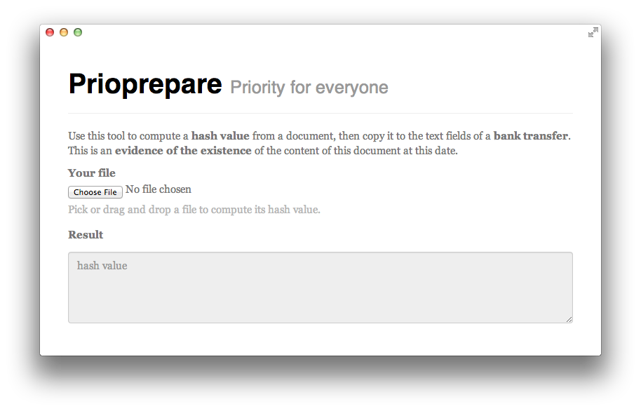
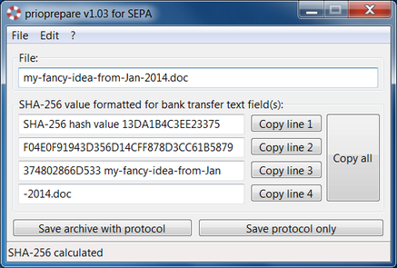

As simple as hashing your document and storing it in a bank transfer
The idea is simple:
Compute a cryptographic fingerprint from a document and copy it to the text fields of a bank transfer. With such a fingerprint (hash value) stored at a bank there is evidence of the existence of the content of a document at a certain point in time. This can be used to e.g. support a proof of priority.
Take the idea, use it for your documents. Ralf, the inventor of the technique, has published it in an open access journal (pdf) in order to make sure it is free to use. You can read the english translation here or download it as a pdf.
Use it now
While the idea can be implemented in various ways, you will find here a few tools to help you hash your documents:
Text fields for SEPA bank transfers offer 140 characters for a message. Some online web interfaces implement this not with a single field, but with two lines of 70 characters or four lines of 35 characters. In any case the text fields can carry a SHA-256 value consisting of 64 characters.
Online tool
You can use the following client-side web page: (also directly accessible from here).
Chrome app
Similar to the online tool, you can install this application for Chrome. It runs offline and has the same features as the web version.
Windows app
You can download and use this Windows version.
After download, simply extract the file "prioprepare.exe" from the zip-archive. Load a file by selecting it, drag and dropping it or passing it as first parameter of prioprepare software.
To prevent the document to be priority protected from later unintended modifications (which make their original SHA-256 hash value useless), also an archive can be created. This archive is a zip-file which contains a copy of the document along with the text protocol of the procedure.